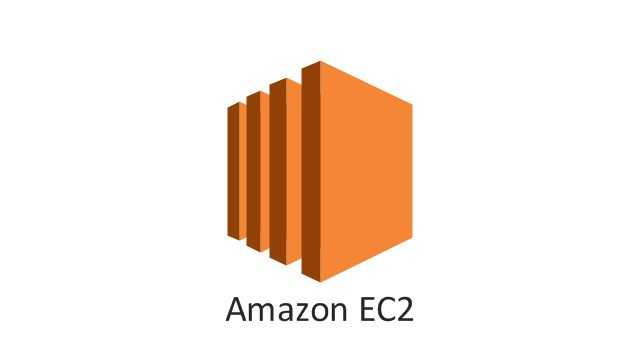

Last Updated: 17-07-2019
Step 1. Create your EC2 resources and launch your EC2 instance.
- Open the Amazon EC2 console at https://console.aws.amazon.com/ec2/.
- Choose Launch Instance.
- Choose an Amazon Machine Image (AMI), find an Amazon Linux AMI at the top of the list and choose Select.
- Choose an Instance Type (t2.micro), choose Next: Configure Instance Details.
- In Step 3: Configure Instance Details, choose Network, and then choose the entry for your default VPC. It should look something like
vpc-xxxxxxx (172.31.0.0/16) (default).
- Choose Subnet, and then choose a subnet in any Availability Zone.
- Choose Next: Add Storage.
- Choose Next: Add Tags. (***Name your instance***)
- Name your instance and choose Next: Configure Security Group.
- In Step 6: Configure Security Group, review the contents of this page, ensure that Assign a security group is set to Create a new security group, and verify that the inbound rule being created has the following default values.
Type: SSH
Protocol: TCP
Port Range: 22
Source: Anywhere 0.0.0.0/0
- Choose Review and Launch.
- Choose Launch.
- Create a new key pair (Name the file as you please), and Download Key Pair, then choose Launch Instances.
- Choose View Instances. (Your instance should be running)